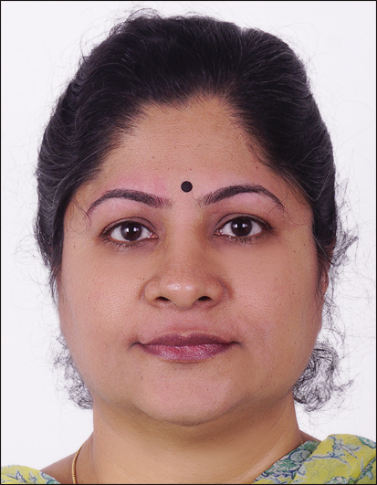

Senior Professor, Department of Statistics Cochin University ofScience and Technology, Kerala, INDIA.
Dr. G. Asha is an academic and researcher specializing in Stochastic Modelling, Survival Analysis, and Reliability Modelling. With extensive experience in teaching and research, her work contributes to both theoretical and applied statistics.
Statistical Practice for Data Science (CRC Press, 2026) View Book
Cochin University of Science and Technology
Kochi, Kerala, India
Email: asha@cusat.ac.in, asha.gopalakrishnan@gmail.com
Phone: 919447220353.